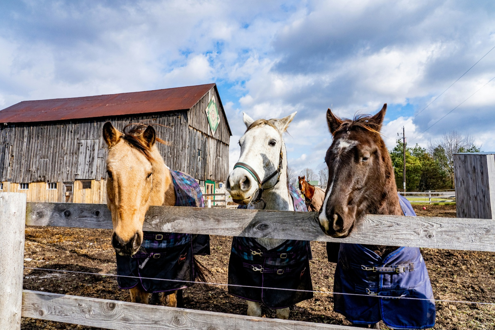
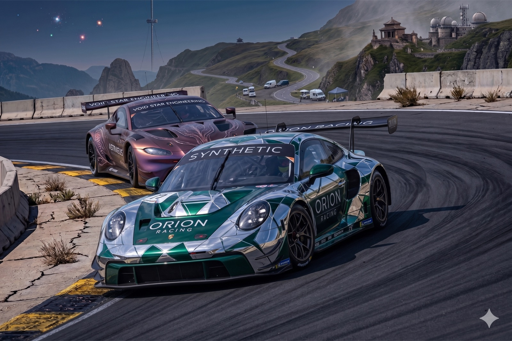
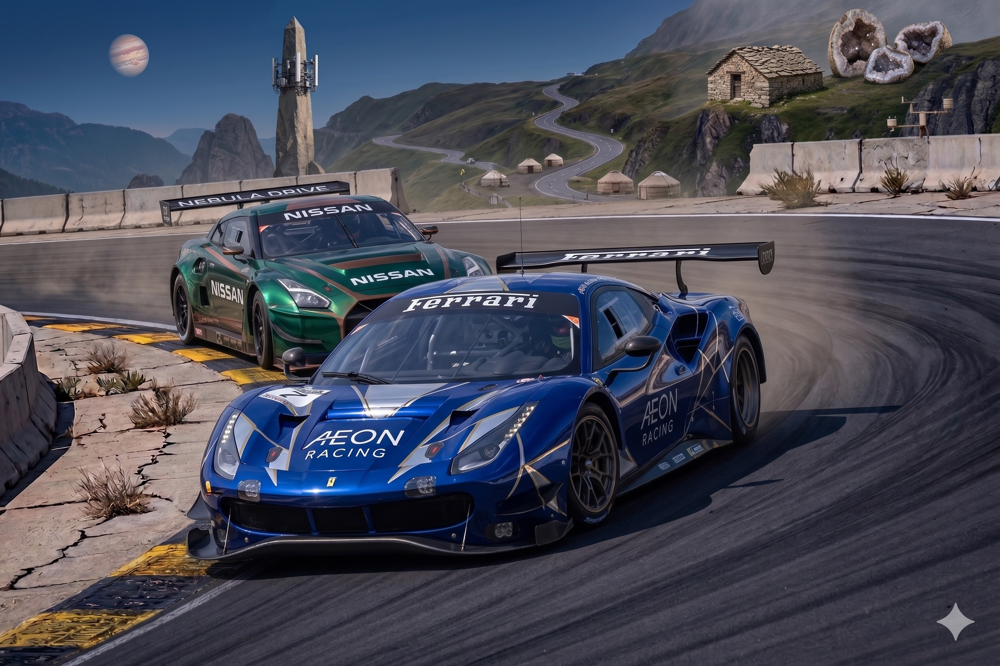

Camera Control with Large Movement and Occlusion
We show camera control with large viewpoint changes and significant occlusions, comparing Real2SAM2Real to SOTA baselines.


Extreme Camera Trajectory
Extreme camera trajectories that stress-test geometric consistency and scene completion under large motion, comparing Real2SAM2Real to SOTA baselines.


Reflection and Refraction and Fluid Dynamics
Challenging scenes involving reflections, refraction, and fluid dynamics where a clean decoupling of geometry and appearance is essential, comparing Real2SAM2Real to SOTA baselines.
Object Manipulation
Object manipulation results comparing our Real2SAM2Real editing to SOTA baselines.


3D Guidance + Text Editing
While adding 3D control, Real2SAM2Real retains the strong pretrained text-prompt ability to describe additional visual effects; together they enable complex, controllable video generation.
“The white horse in the middle lifts its head.”

“Spaceship hit, billowing smoke.”

Motion Transfer
Motion from a source scene is transferred to target images while preserving appearance and layout.


Ablation
Ablations on perturbation and soft spatial injection, two key components of our training recipe.